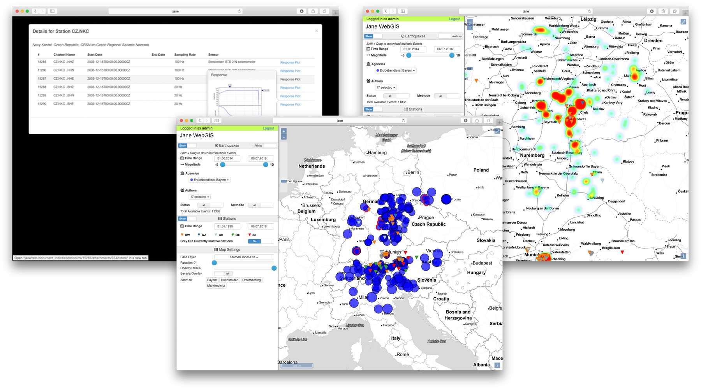

Introduction
Jane is a database for seismological data especially suited for small to medium size observatories and research groups.
Features
High Performance Waveform Database
Jane can index, and serve queries for seismological waveform data.
Document based StationXML and QuakeML store
It utilizes a JSON based document database to store and retrieve information about QuakeML and StationXML files.
REST Interface
Upload, delete, and modify documents via a powerful REST interface. Supports the JSON, XML, and YAML formats.
Built-in FDSN Web Services
Waveforms, station, and event meta information can be retrieved via the built-in fdsnws web services implementations for all three data types.
Web GIS
Information within Jane can be explored with an interactive HTML5 based web
GIS system. It supports fast, client-side event display and filtering,
various map background and other settings, the plotting of stations,
instrument responses, event heatmaps and many other things.

Plugin System
The document store is fully plugin based - the QuakeML and StationXML
handling are also implemented as plugins. This means it is very easy to
extend Jane with your own functionality.
User Management
The full power and flexibility of Django is accessible allowing fine grained user and group permission management.